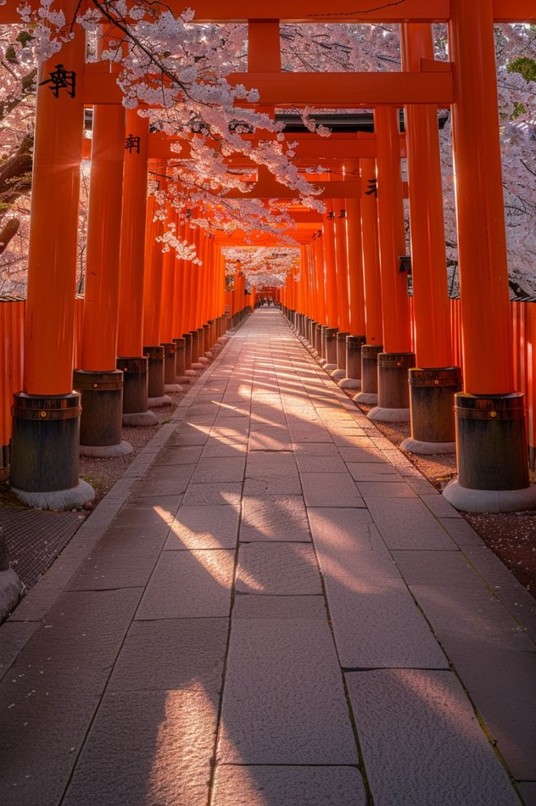

Bem-vindo a Kyoto: A Antiga Capital do Japão
Kyoto é uma cidade fascinante que preserva a essência do Japão antigo. Como capital do Japão por mais de mil anos (794-1868), Kyoto guarda um tesouro de templos, santuários, palácios e jardins tradicionais. Conhecida como o “coração cultural do Japão,” a cidade possui mais de 2.000 templos budistas e santuários xintoístas, alguns deles listados como Patrimônio Mundial pela UNESCO. Entre os pontos mais icônicos de Kyoto estão o Templo Kinkaku-ji, conhecido como o "Pavilhão Dourado," cujas paredes folheadas a ouro brilham sobre um lago sereno, e o Templo Fushimi Inari-taisha, famoso por seu túnel de milhares de portões vermelhos "torii". Além disso, o Templo Kiyomizu-dera oferece vistas panorâmicas da cidade e encanta visitantes com sua arquitetura centenária. Kyoto também é um lugar para experimentar o Japão autêntico. Nos bairros históricos como Gion, você pode ver maikos e geikos (aprendizes de gueixa e gueixas) desfilando em trajes tradicionais. Kyoto é igualmente renomada por seus festivais sazonais, como o Gion Matsuri, um dos maiores festivais do Japão, e o encantador festival de folhas de outono em Arashiyama, que transforma a cidade em uma paisagem vibrante de cores. Para os amantes da gastronomia, Kyoto é uma experiência imperdível. A cidade oferece pratos tradicionais como o kaiseki (refeição de múltiplos pratos), chá verde matcha, e uma variedade de doces típicos que acompanham a famosa cerimônia do chá japonesa. Com uma combinação única de tradição, beleza natural e modernidade discreta, Kyoto é um destino que cativa o coração e a alma de quem a visita. Explore Kyoto e descubra um Japão onde a história e a espiritualidade se encontram em cada esquina.
